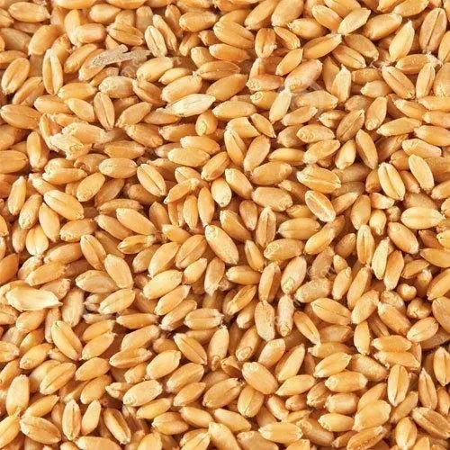
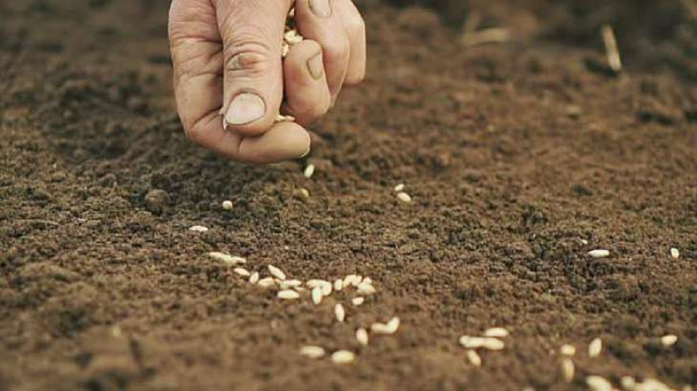
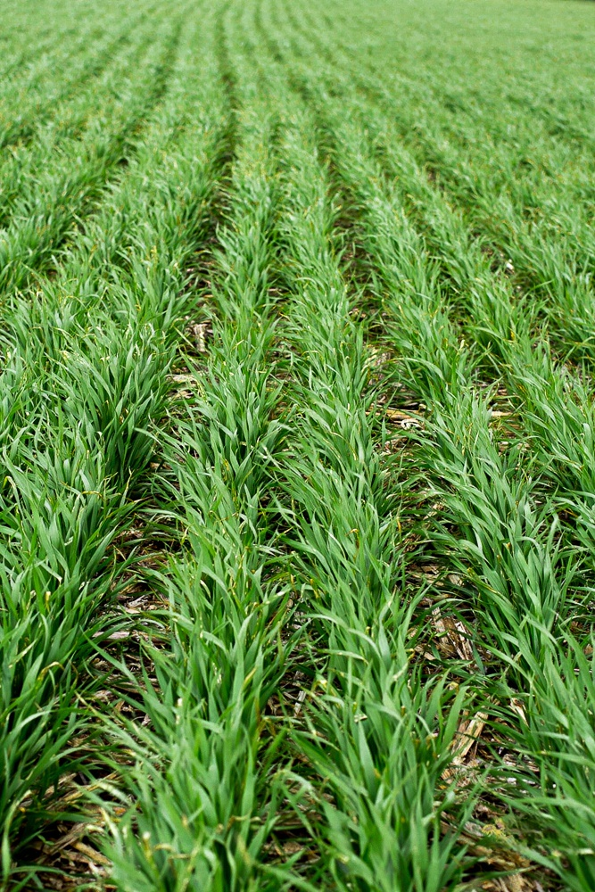
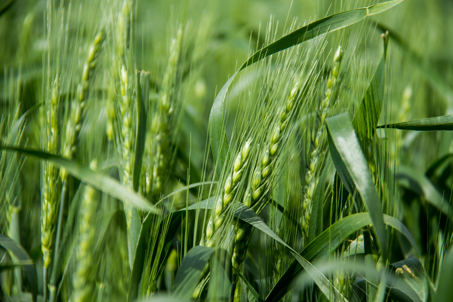
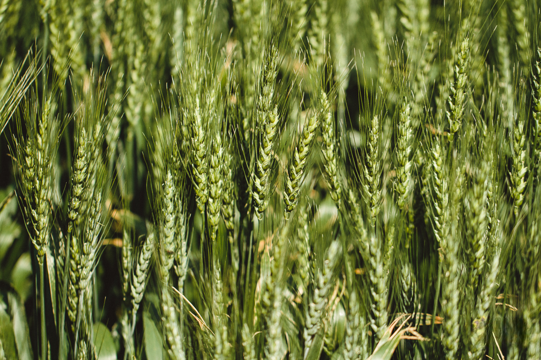

Wheat Information
Pre-Planting (Before Sowing)
- Timing: 2-3 Weeks Before Sowing
- Fertilizer: Organic Manure (Compost/FYM)
- Purpose: Improve soil structure, increase organic matter
- Recommended Quantity: 5-10 tons/ha
- Fertilizer: Phosphorus (P) (e.g., SSP, DAP)
- Purpose: Promote root development and early growth
- Recommended Quantity: 40-60 kg/ha
- Fertilizer: Potassium (K) (e.g., MOP, SOP)
- Purpose: Enhance stress resistance, improve grain quality
- Recommended Quantity: 30-40 kg/ha
- Fertilizer: Lime/Gypsum (If Needed)
- Purpose: Adjust soil pH, supply calcium
- Recommended Quantity: Based on soil test results

At Sowing
- Timing: Sowing Time
- Fertilizer: Starter Fertilizer (N-P-K blend)
- Purpose: Provide balanced nutrients for initial growth
- Recommended Quantity: 20-30 kg/ha of Nitrogen, Phosphorus, and Potassium
- Fertilizer: Micronutrients (Zinc, Boron, etc.)
- Purpose: Prevent micronutrient deficiencies
- Recommended Quantity: Based on soil test or foliar spray during early growth

Vegetative Growth (4-6 Weeks)
- Timing: 4-6 Weeks After Sowing
- Fertilizer: Nitrogen (N) (Top-Dressing)
- Purpose: Support vegetative growth, leaf development
- Recommended Quantity: 40-60 kg/ha (e.g., Urea)
- Fertilizer: Potassium (K) (If Needed)
- Purpose: Improve stress tolerance, plant health
- Recommended Quantity: 20-30 kg/ha
- Fertilizer: Micronutrients (Zinc, Boron, etc.)
- Purpose: Prevent deficiencies, support overall plant health
- Recommended Quantity: 5-10 kg/ha (if deficiency observed)

Reproductive Stage
- Timing: 6-8 Weeks After Sowing
- Fertilizer: Nitrogen (N) (Top-Dressing)
- Purpose: Promote grain development and yield
- Recommended Quantity: 20-30 kg/ha
- Fertilizer: Phosphorus (P) (Top-Dressing)
- Purpose: Enhance grain development, support yield
- Recommended Quantity: 20-30 kg/ha
- Fertilizer: Potassium (K) (Top-Dressing)
- Purpose: Improve grain quality, enhance stress resistance
- Recommended Quantity: 30-40 kg/ha
- Fertilizer: Micronutrients (Zinc, Iron, etc.)
- Purpose: Improve grain quality, prevent deficiencies
- Recommended Quantity: 1-2 kg/ha (foliar spray)

Maturity Stage
- Timing: 10+ Weeks After Sowing
- Fertilizer: No Further Fertilization
- Purpose: Allow grains to mature, avoid excessive vegetative growth
- Recommended Quantity: Not applicable
